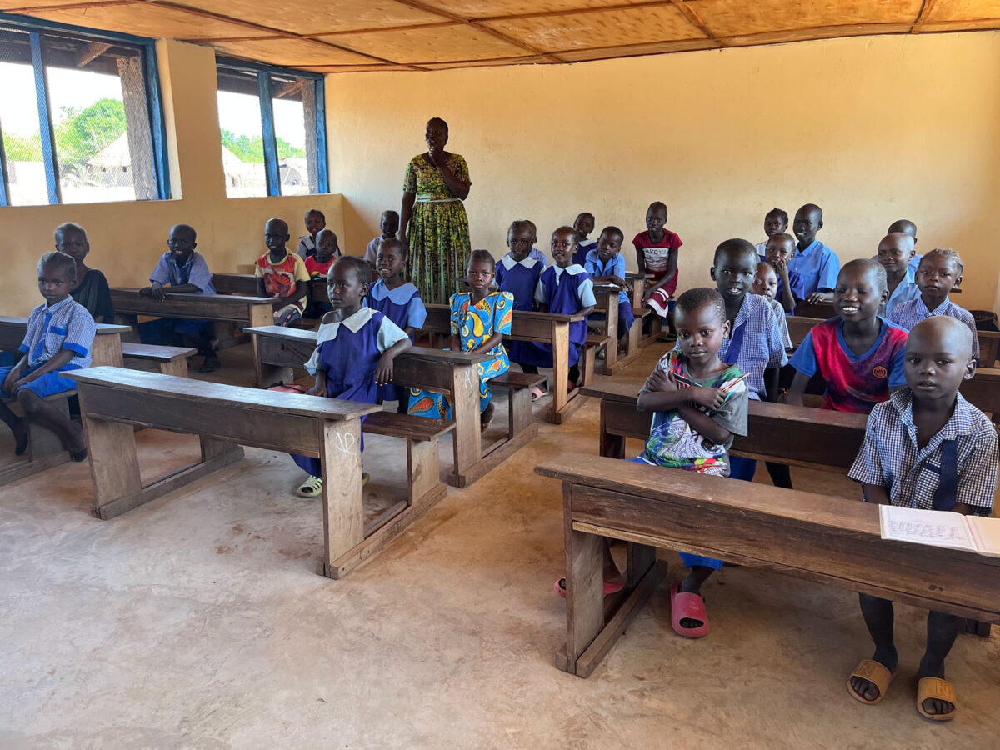

OriginThe idea was sparked during a humanitarian trip, where our founders witnessed the resilience of South Sudanese communities. They realized that education was a crucial pillar for sustainable development and peace. Inspired by the local culture and the community's commitment to learning, they planed a solution that would empower both students and teachers. |
GoalsNot only to improve literacy rates but to foster critical thinking, creativity, and leadership skills among the youth, enabling them to build a brighter future for themselves and their communities. |
WorkplaceWe primarily work in rural regions of South Sudan, focusing on areas with limited access to formal education. We collaborate with local communities, schools, and government agencies to identify the most affected regions, often prioritizing places that have been impacted by conflict or where educational infrastructure is lacking. |  |